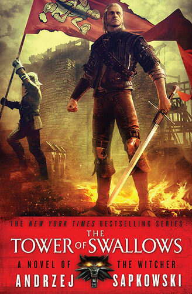
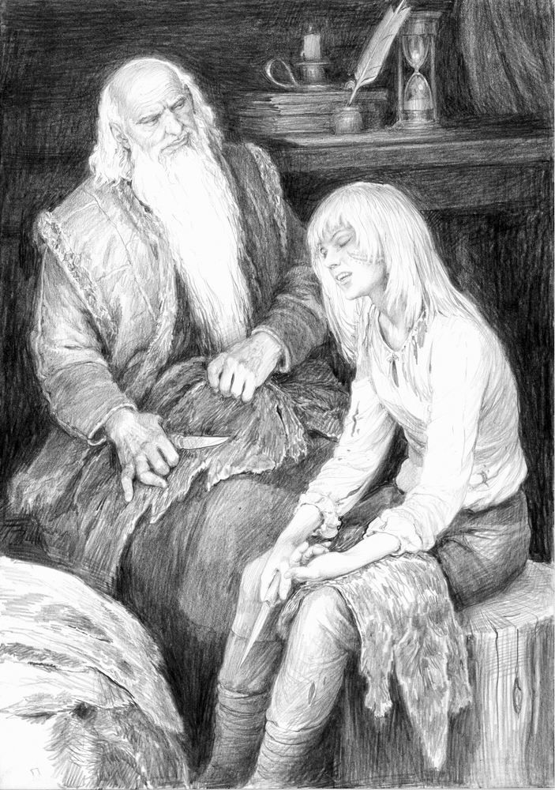

The Tower of the Swallow (UK) or The Tower of Swallows (U.S.), was written by Andrzej Sapkowski and was first published in Poland in 1997 and is the sixth book in The Witcher series and the fourth novel in the saga.
Buy The Tower Of Swallows Here
The Tower of Swallows US Cover Published 17-May-2016
One day, old Vysogota finds a very badly injured girl in the swamp surrounding his retreat. He saves her life and she tells him her story... the story of Ciri and how she became a cruel killer meeting death at every step. Until she met her retribution - Leo Bonhart, who killed her fellow bandits and captured her.
Meanwhile, Geralt is on his way to find Druids who might know where Ciri is. But someone is determined that the witcher should not find her...
Vysogota, an old philosopher living in the Pereplut swamp, finds an injured Ciri near his retreat and takes her in, caring for her until she is ready to continue her journey. She tells her life story to the old man: how all the Rats were killed by Leo Bonhart, all except for Ciri. As she readies herself to leave, she is convinced that both Geralt and Yennefer are dead. Based on this assumption, she leaves Vysogota to find Tor Zireael.
Vysogota and Ciri Talking
Meanwhile, Geralt meets an elf named Avallac'h who tells him about a prophecy connected with Ciri. He needs to find some druids who will reportedly know where Ciri is. Yennefer is trying to find Vilgefortz's hiding place, but it is no easy task.